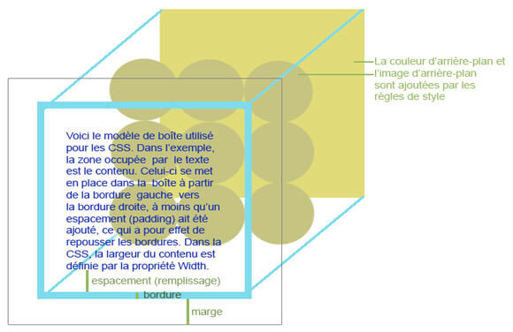
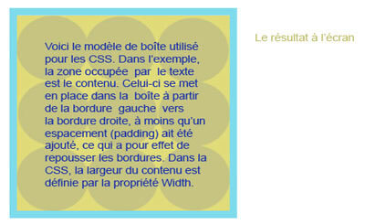
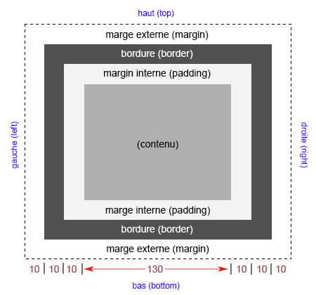
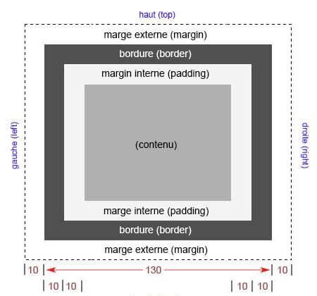
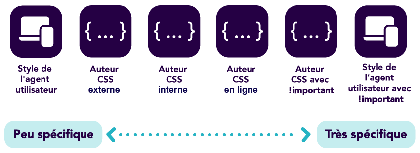
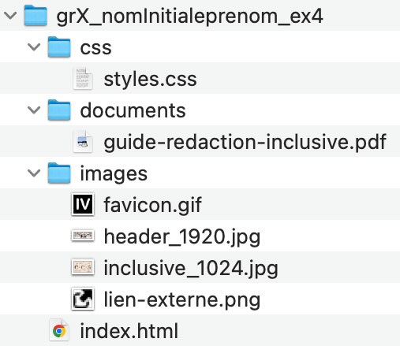
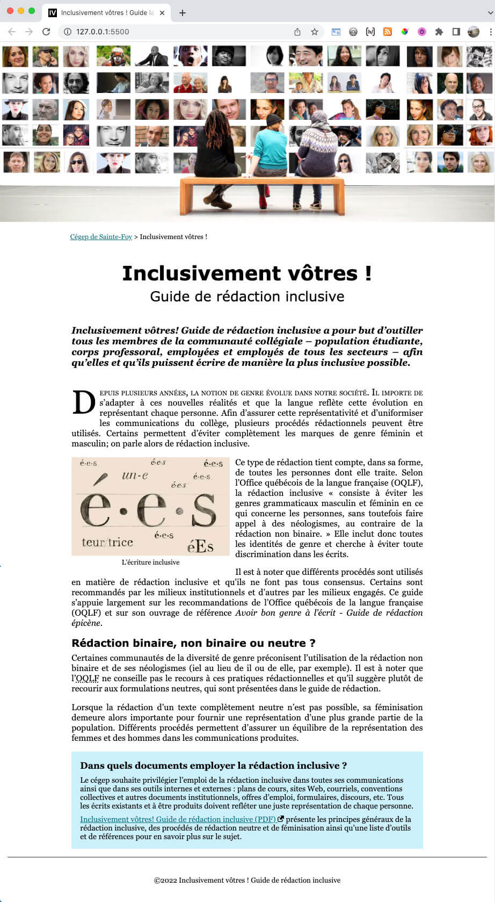
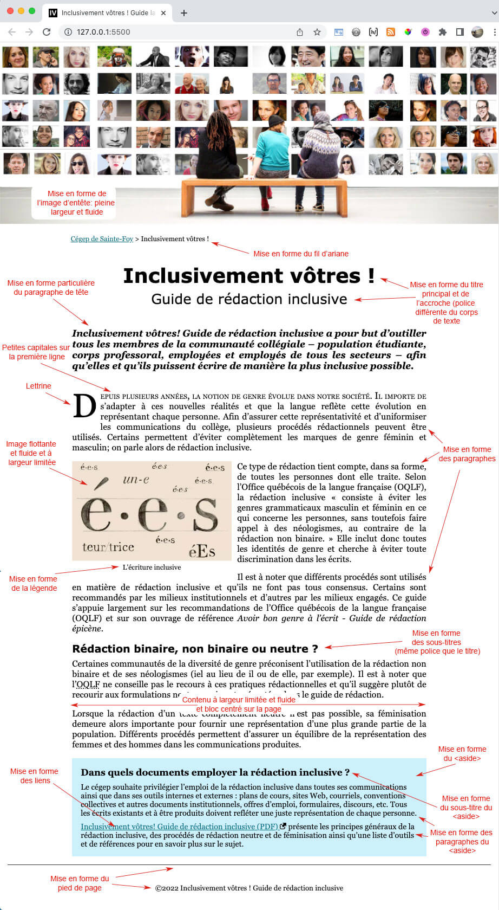

CSS : le modèle de boite
CSS est souvent illustré par un modèle de boîte :

padding (marge interne / remplissage / espacement) est transparent : il s'agit de l'espace adjacent au contenu et laisse voir la couleur d'arrière-plan ou l'image d'arrière-plan de l'élément auquel il appartient.
margin (marge externe) est transparent : il laisse voir la couleur d'arrière-plan ou l'image d'arrière-plan de l'élément parent sous-jacent, et non pas de l'élément auquel il appartient.
border (bordure) se situe entre le padding et le margin.

Le modèle de boite CSS
Pour comprendre le modèle de boîte, voyez en classe cette démo Codepen:
See the Pen c05-modele_de_boite by Frédéric Lacroix (@frlacroix) on CodePen.
Comment calculer la largeur d'un élément?
La propriété CSS box-sizing sert à définir comment la largeur (width) et la hauteur (height) d'un élément sont calculées dans le modèle de boîte.
La valeur par défaut de cette propriété est content-box, mais nous utiliserons border-box pour faciliter notre travail.
content-box
Avec content-box, la valeur de width correspond uniquement à la largeur du contenu. Le padding et la border sont ajoutés à cette largeur.
Code
div { width: 130px; padding: 10px; border: 10px solid #000; margin: 10px; box-sizing: content-box; }
Résultat

La largeur se calcule ainsi :
margin + border + padding + width + padding + border + margin
10 + 10 + 10 + 130 + 10 + 10 + 10 = 190 px
L'élément occupe donc 190 px de largeur au total.
border-box
Avec border-box, la valeur de width correspond à la largeur totale de l'élément, incluant le padding et la border.
Avec les mêmes valeurs :
Code
div { width: 130px; padding: 10px; border: 10px solid #000; margin: 10px; box-sizing: border-box; }
Résultat

La largeur de l'élément se limite maintenant à la valeur définie par width : 130 px;. Le padding et la border sont compris à l'intérieur de ces 130 px. La marge (margin), quant à elle, reste à l'extérieur de l'élément :
10 + 130 + 10 = 150 px
L'élément occupe donc 150 px d'espace au total, mais sa largeur (width) demeure 130 px.
Notez padding, border et margin sont des propriétés dites « raccourcies »
- Lorsqu'on utilise
marginoupaddingtout seul, accompagné d'une seule valeur (ex.:margin:10px;), cette valeur s'applique à la fois aux marges du haut, de droite, du bas et de gauche, alors que la formule longue, telle quemargin-toppar exemple, ne s'applique qu'à la marge du haut. - Vous croiserez souvent une déclaration écrite comme ceci :
margin: 5px 10px 15px 12px;
Elle signifie la même chose que ces quatres déclarations :
margin-top: 5px;
margin-right: 10px;
margin-bottom: 15px;
margin-left: 12px;
CSS : héritage, cascade et spécificité
Héritage
L'héritage dans les CSS signifie la transmission des valeurs des propriétés CSS des ancêtres vers les descendants.
Nous avons vu que l'élément html est l'ancêtre de tous les ancêtres. Considérez la règle suivante pour l'élément html :
html { font-family: Segoe, "Trebuchet MS", Verdana, sans-serif; color: blue; }
Le texte de tous les éléments descendants de html dans le document hérite de ces valeurs, peu importe la profondeur de la descendance.
L'héritage ne s'applique pas à toutes les propriétés. Par exemple, cela n'aurait pas de pertinence que l'ajout d'une bordure à un élément main se répercute à tous ses enfants et descendants (tels des p, h1, h2, etc.). La propriété bordure ne peut donc être transmise aux descendants d'un conteneur.
Cascade
Le mot cascade de l'expression « feuille de style en cascade » ou cascading style sheet (CSS) signifie le passage d'un niveau de mise en forme à un autre, dans un ordre contrôlé, dans le meilleur des cas.
Sa fonction est de permettre au navigateur de décider parmi les différentes options quelle source doit être utilisée pour décrire une propriété particulière.
Sources des règles de style
Les styles proviennent de plusieurs sources.
1) D'abord, le navigateur possède sa propre feuille de style. C'est pourquoi h1 possède une taille propre par défaut et que les paragraphes ont d'emblée une certaine marge entre eux.
2) Ensuite, il y a les règles de style de l'auteur, soit celles écrites par vous-même en tant qu'auteur d'une page Web.
Comme on l'a vu, celles-ci peuvent-être de trois types:
- feuille de style liée;
- feuille de style insérée;
- règles de style en ligne (à même les éléments de balisage).
Voici l'ordre dans lequel le navigateur passe en revue les localisations des règles de style:

Un agent utilisateur est un programme informatique qui représente une entité, par exemple, un navigateur dans le cadre d'une utilisation sur le Web.
La cascade détermine l'ordre de lecture des règles de style et, en même temps, l'ordre dans lequel ces règles de style sont mises à jour au fur et à mesure que la cascade progresse.
La mise à jour des règles à appliquer suit l'ordre de la cascade, mais cela, en fonction d'un certains nombre de règles.
Les règles de la cascade
Règle 1: Trouver toutes les déclarations s'appliquant à chaque élément
Avec le chargement de chaque page, le navigateur scrute tous les éléments de la page et voit si une règle de style s'applique à l'un de ces éléments.
Règle 2: Trier par ordre
Le navigateur passe à travers chacune des cinq sources de règles de style potentielles, en mettant à jour les propriétés qui sont redéfinies plus bas dans la cascade. La dernière mise à jour sera celle qui prévaudra à l'affichage.
Par exemple, supposons que, dans l'exemple illustré par le tableau, deux des paragraphes du document passé en revue ont des règles de styles en ligne définissant la couleur du texte comme étant rouge. Dans ce cas, tous les éléments p auront un texte bleu sauf ceux ayant une règle de style en ligne redéfinissant le texte comme étant rouge.
| Localisation | Élément | Propriété | Valeur |
|---|---|---|---|
| Feuille de style par défaut | tous les p |
color |
black |
| Feuille de style de l'utilisateur | |||
| Feuille de style de l'auteur: externe | tous les p |
color |
blue |
| Feuille de style de l'auteur: interne | |||
| Règles de l'auteur en ligne | certains p |
color |
red |
Règle 3: Trier par spécificité
Un sélecteur d'identifiant est plus spécifique qu'un sélecteur de classe.
Un sélecteur de classe est plus spécifique qu'un sélecteur de type (élément HTML).
La spécificité est plus puissante que l'ordre: c'est-à-dire qu'une règle plus spécifique rencontrée plus haut dans la cascade l'emporte sur une règle moins spécifique rencontrée plus bas dans la cascade.
Si deux règles ont le même poids, celle qui se trouve plus bas dans la cascade l'emporte.
La spécificité (ou le poids) se calcule par A-B-C, c'est-à-dire:
- Ajoutez 1 à A pour chaque identifiant dans le sélecteur.
- Ajoutez 1 à B pour chaque classe (ou pseudo-classe) dans le sélecteur.
- Ajoutez 1 à C pour chaque élément (ou pseudo-élément) dans le sélecteur.
Lisez le résultat un peu comme un nombre normal à trois chiffres: par exemple, 0-2-0 (20) est plus spécifique que 0-0-9 (9) et 0-0-9 (9) est plus spécifique que 0-0-3 (3).
Nous n'utilisons ni identifiant ni classe pour le moment, mais voici tout de même une comparaison des sélecteurs d'éléments HTML (ou sélecteur de type) avec les sélecteurs de classe (.item-de-liste) et d'identifiant (#item-de-liste):
| Sélecteur | A-B-C | Spécificité |
|---|---|---|
| li | 0-0-1 | 1 |
| ul p | 0-0-2 | 2 |
| nav ul li | 0-0-3 | 3 |
| header nav ul li | 0-0-4 | 4 |
| body header nav ul li | 0-0-5 | 5 |
| .item-de-liste | 0-1-0 | 10 |
| #item-de-liste | 1-0-0 | 100 |
La spécificité
Entrez des valeurs pour la propriété color pour les différentes règles de style et constatez la valeur qui s'applique dans la fenêtre Result.
Calculez la spécificité de chaque sélecteur et constatez son effet dans l'application de la couleur du texte.
See the Pen c05-specificite01 by Frédéric Lacroix (@frlacroix) on CodePen.
Outil diagnostic: !important
Le poids de la déclaration est aussi pris en compte. Vous pouvez définir une règle comme étant «importante», comme ceci
a:link { color: blue !important; }
Le mot !important est écrit à la suite de la valeur, après une espace et avant le point-virgule. Il force le navigateur à afficher cette valeur, quelles que soit les valeurs rencontrées plus bas dans la cascade.
Vous devez utiliser cet outil avec parcimonie.
Le mot !important constitue surtout un outil diagnostic pour le développeur web. Utilisé temporairement, il permet en effet de détecter des conflits de règles de style lors de la conception de la mise en forme d'une page Web.
Quelques pistes pour réaliser l'exercice 4
Faire flotter une image
La propriété float permet de faire flotter une image (ou n'importe quel autre élément) dans le texte.
Voir en classe pour la suite.
Rendre une image flottante
See the Pen c05_image-flottante by Frédéric Lacroix (@frlacroix) on CodePen.
Rendre une image fluide
Par défaut, les images conservent leur taille native lorsque insérées dans le code HTML. Pour rendre les images fluides, c'est-à-dire adaptables à la taille de la fenêtre du navigateur, vous devez utliser des unités de taille relative.
Voir en class pour la suite.
Rendre une image d'entête fluide
See the Pen c06_images-fluides by Frédéric Lacroix (@frlacroix) on CodePen.
Centrer un élément de type bloc et lui donner une largeur maximale (tout en conservant sa fluidité)
Par défaut, les images conservent leur taille native lorsque insérées dans le code HTML. Pour rendre les images fluides, c'est-à-dire adaptables à la taille de la fenêtre du navigateur, vous devez utliser des unités de taille relative.
Voir en class pour la suite.
Centrer un élément bloc et lui donner une largeur maximale tout en conservant sa fluidité
See the Pen c05_centrer-élément-bloc by Frédéric Lacroix (@frlacroix) on CodePen.
Activités d'évaluation
EX4 - CSS : mettre en forme un document html
L'exercice 4 a pour objectif de vous familiariser avec les proprétés CSS parmi les plus courantes. Plus spécifiquement, vous effectuerez la mise en forme d'une page en rédigeant vous-mêmes les règles de style.
Sources
Téléchargez le dossier Ex4.zip.
Référez-vous au tableau de sélecteurs pour faire votre travail: Sélecteurs du DOM
Documents à remettre
Un dossier rigoureusement nommé grX_nomInitialeprenom_ex4 (remplacez X par votre numéro de groupe) contenant les fichiers suivants:

Échéancier
Remettez l'archive zippée sur LÉA au plus tard le jeudi suivant à 8h.
Travail à faire
Vous devez mettre en forme la page index.html.
Toutes les règles de style doivent être rédigées dans la feuille de style externe, c'est-à-dire dans le document styles.css.
En vous inspirant des deux images suivantes, rédigez des règles de style dans le document styles.css qui permettent d'obtenir un résultat pas nécessairement identique, mais équivalent.

L'image suivante présente les différentes mises en forme à prévoir. Pour chacune de ces mises en forme, il aura une ou plusieurs règles de style à rédiger.

Prêt à remettre le travail?
- Votre travail doit être validé à l'aide du navigateur Google Chrome (c'est-à-dire que l'affichage doit être satisfaisant sur ce navigateur).
- Vérifier l'organisation de votre code dans le document styles.css :
- indenter chaque ligne (avec la touche TAB );
- faire un saut de ligne après chaque déclaration.
- Lorsque vous êtes prêts à remettre votre travail, accédez au dossier grX_nomInitialeprenom_ex4 par le Finder (ou l'explorateur de fichier sur PC).
- Cliquez-droit sur le dossier et sélectionnez « Compresser ».
- Cela créera une archive zip. Remettez cette archive zip sur LÉA à l'endroit prévu.
Exceptionnellement, la documentation en lien avec la leçon 7 vous sera distribuée lundi le 5 octobre.
Un MIO vous sera envoyé pour vous informer de sa disponibilité.